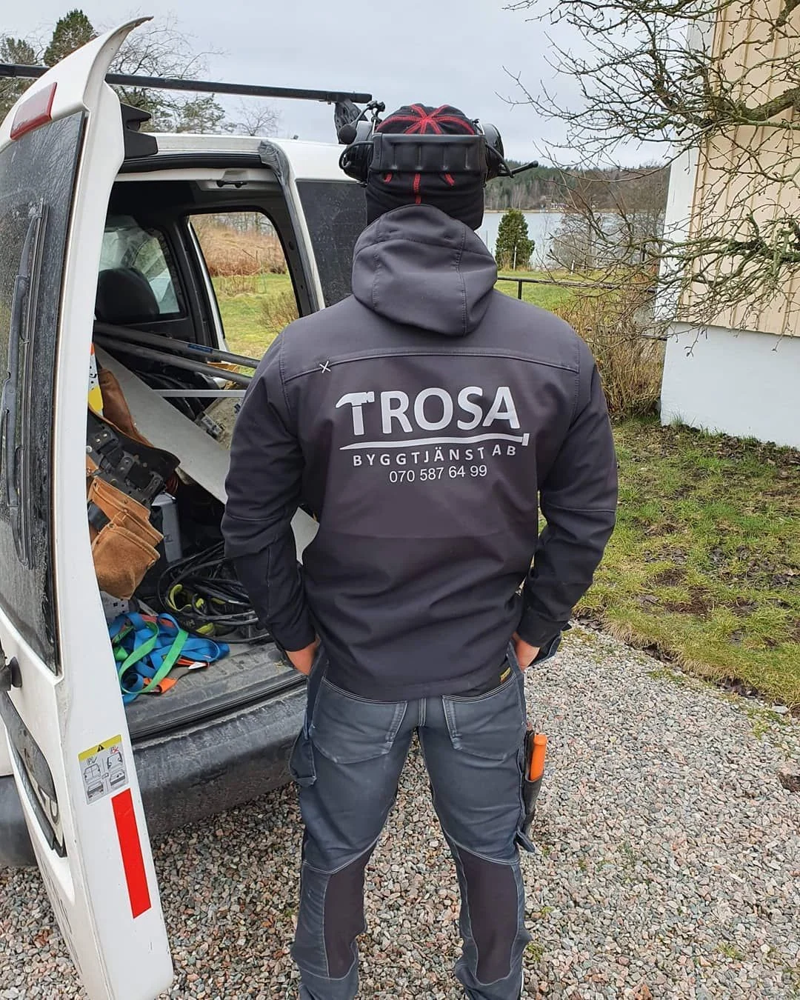

Människorna
bakom ditt
nästa projekt.
Vi är Trosa Byggtjänst. Den lilla firman med ett personligt engagemang i ditt byggprojekt.
Ta kontakt med oss
En ny början.
Med en historia bakom.
Tobias Taavitsainen började som snickare hos Tommy Johansson på Lagnövikens Byggnads 2013. År 2019 startade Tobias Trosa Byggtjänst AB.
Tommy hade drivit den tidigare verksamheten sedan 1982. I början av 2020 lämnade han över till Tobias och det nya bolaget.
Vi utgår från Trosa kommun och arbetar framför allt med privatkunder. Företag är också välkomna, och vi tar även uppdrag utanför kommunen.

Människorna
bakom arbetet.
Snickare, administration och samarbetspartner. Tillsammans tar vi oss an små och stora projekt.
Tobias Taavitsainen
Ägare
Joakim Bostedt
Snickare
Magnus Bodén
Snickare
Peter Marklind
Snickare
Björn Fransson
Snickare
Cecilia Taavitsainen
Administration
Vad vill du
bygga vidare på?
En idé, en ritning eller en fråga. Hör av dig till Tobias och berätta om ditt projekt.